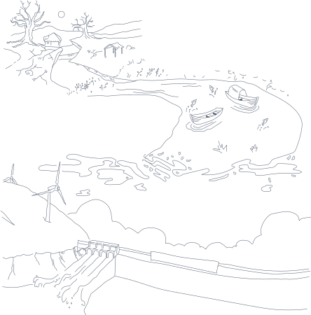

Result
ผลที่ได้จากการทำฝนหลวง



 เพื่อแก้ไขปัญหาขาดแคลนน้ำในการเกษตรในช่วงที่เกิดภาวะฝนแล้งหรือฝนทิ้งช่วงยาวนานเพื่อเพิ่มปริมาณน้ำให้กับพื้นที่ลุ่มรับน้ำของแม่น้ำสายต่างๆที่มีปริมาณน้ำต้นทุนลดน้อยลง
เพื่อแก้ไขปัญหาขาดแคลนน้ำในการเกษตรในช่วงที่เกิดภาวะฝนแล้งหรือฝนทิ้งช่วงยาวนานเพื่อเพิ่มปริมาณน้ำให้กับพื้นที่ลุ่มรับน้ำของแม่น้ำสายต่างๆที่มีปริมาณน้ำต้นทุนลดน้อยลง
 เพื่อแก้ปัญหาการขาดแคลนน้ำเพื่อการอุปโภคบริโภคเสริมสร้างเส้นทางคมนาคมทางน้ำเป็นการเพิ่มปริมาณน้ำโดยเฉพาะในบริเวณแม่น้ำที่ตื้นเขินให้สามารถใช้เป็นเส้นทางคมนาคมได้
เพื่อแก้ปัญหาการขาดแคลนน้ำเพื่อการอุปโภคบริโภคเสริมสร้างเส้นทางคมนาคมทางน้ำเป็นการเพิ่มปริมาณน้ำโดยเฉพาะในบริเวณแม่น้ำที่ตื้นเขินให้สามารถใช้เป็นเส้นทางคมนาคมได้
 เพื่อป้องกันและบำบัดภาวะมลพิษของสิ่งแวดล้อม"ฝนหลวง"ได้บรรเทาภาวะแวดล้อมเป็นพิษอันเกิดจากการระบายน้ำเสียและขยะมูลฝอยลงสู่แม่น้ำเจ้าพระยาปริมาณน้ำจากฝนหลวงจะทำให้ภาวะมลพิษจากน้ำเสียเจือจางลง
เพื่อป้องกันและบำบัดภาวะมลพิษของสิ่งแวดล้อม"ฝนหลวง"ได้บรรเทาภาวะแวดล้อมเป็นพิษอันเกิดจากการระบายน้ำเสียและขยะมูลฝอยลงสู่แม่น้ำเจ้าพระยาปริมาณน้ำจากฝนหลวงจะทำให้ภาวะมลพิษจากน้ำเสียเจือจางลง
เพื่อเพิ่มปริมาณน้ำในเขื่อนภูมิพล
และเขื่อนสิริกิติ์เพื่อผลิตกระแสไฟฟ้าฝนหลวงในอนาคต
ผลเสีย

การทำฝนเทียมเกิดจากสมมติฐานที่ว่าทำอย่างไรจึงจะสามารถบริหารจัดการฝนที่ตกจากฟ้า
และการจัดการน้ำที่ต้องอาศัยความรู้และการประสานงาน แต่ฝนเทียมก็ก่อให้เกิดผลกระทบอยู่บ้าง
ตัวอย่างเช่น การพยายามทำให้ฝนตกในที่ที่ต้องการ แทนที่จะปล่อยให้ตกเองตามธรรมชาติ
ถือเป็นการบังคับฝน รวมถึงเมฆก็ถือเป็นทรัพยากรของประเทศที่ต้องมีการจัดการ
การดึงเมฆมาใช้ย่อมสูญเสียเมฆที่จะก่อตัวเป็นฝนเช่นกัน
ดังนั้นการจะทำฝนเทียมต้องทำโดยหน่วยงานของรัฐ และมีการประสานงานที่ดี
น้ำที่ตกลงมาก็ต้องมีการจัดการดูแล
นอกจากนี้ ยังมีการใช้สารเคมี ตระกูลแคลเซียมออกไซด์ ทั้งหลาย
ซึ่งสารเคมีเหล่านี้เมื่อปนเปื้อนอยู่ในอากาศมากๆ อาจจะมีความเสี่ยงต่อการเป็นมะเร็งปอด
และยังมีการใช้สารเคมีจำพวก แอมโมเนียมและไนเตรท
หากไม่สามารถควบคุมอัตราการเกิดปฎิกิริยาทางเคมีได้
อาจจะทำให้เกิดสารกัดกร่อนที่มีฤทธิ์เป็นกรดได้ การทำฝนเทียมจึงต้องมีปัจจัยที่เหมาะสม
โดยเฉพาะความชื้นในอากาศต้องมีเพียงพอ ไม่ใช่ว่าจะทำที่ไหนก็ได้
หากมีลมพัดเมฆไปอาจจะเกิดฝนตกในที่ที่ไม่ต้องการได้ จึงอาจมีบางครั้งที่ทำฝนเทียมไม่สำเร็จ
แต่การทำฝนเทียมก็ช่วยแก้ปัญหาได้ในหลายๆ ครั้ง
เพราะเหมาะกับเขตร้อนชื้นฝนตกชุกแบบประเทศไทย จึงได้ผลดีกว่าประเทศอื่นๆ